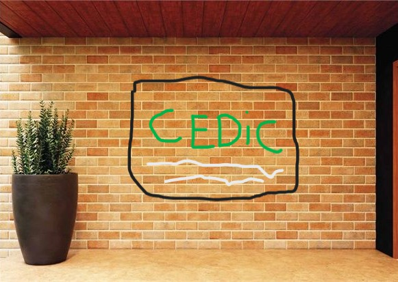
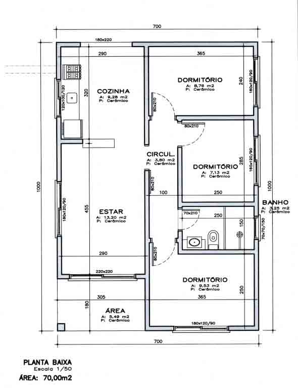

DESCUBRA OS EXPERIMENTOS DO CEDiC!
Escolha uma matéria e veja quais experimentos o CEDiC oferece:
O que é o CEDiC?
O Centro de Extensão e Divulgação Científica (CEDiC) é um programa de extensão da Faculdade de Ciências (FC) da Universidade Estadual Paulista "Júlio de Mesquita Filho" (UNESP). Vinculado à Vice-Diretoria da FC, o programa tem como
O CEDiC surge com o papel de aproximar a universidade da sociedade na qual ela está inserida. Isso ocorre por meio de projetos que buscam trocar saberes entre ambas as partes, pautados pelo respeito e pela convicção que todos têm algo a ensinar e a aprender. Essa ideia, basilar no Ensino Superior, ganha cada vez mais destaque no Brasil e no mundo. Abaixo, você pode conferir as principais iniciativas realizadas pelo programa.
A equipe do CEDiC é composta por discentes voluntários e bolsistas, oriundos de variados cursos da UNESP; sendo atualmente coordenados pelo docente Dr. Kleper Rocha. Este grupo é subdividido em times menores, cada qual responsável pela executação de uma vertente do programa. Para saber mais sobre nossa história, acesse a aba "Sobre"!

Projetos de Extensão
Carregando projetos...

Nossa infraestrutura
O Centro de Extensão e Divulgação Científica (CEDiC) é um espaço da UNESP - Bauru de 391 m², dedicado às atividades de divulgação científica da universidade. Originalmente, o local abrigava os escritórios dos pesquisadores do IPMet, mas foi readaptado para atender às novas necessidades. As instalações incluem várias salas que são utilizadas para atividades científicas, uma cozinha, um auditório e banheiros masculinos e femininos, conforme a planta baixa ao lado. O CEDiC é dividido em áreas específicas, como os Espaços Secos e os Espaços Molhados (ambos com 51,75 m²), além de duas salas de exposição, um anfiteatro e três salas de apoio, sendo adaptado para pessoas com mobilidade reduzida.
O CEDiC também incorpora o Observatório Didático de Astronomia da UNESP, que está em funcionamento desde 2009. Este observatório dispõe de uma sala com 18 computadores, duas salas de aula com capacidade para 30 pessoas cada, e outras facilidades como guarita de vigilância, acesso público facilitado, estacionamento para pessoas com necessidades especiais, rampa de acesso, banheiros e bebedouro. Essas características fazem do CEDiC um local ideal para a realização de diversas atividades científicas e educativas, proporcionando um ambiente acessível e bem equipado para todos os visitantes.
Quer aprender ciências, transformar sua comunidade e desvendar o mundo?
Visite o CEDiC!